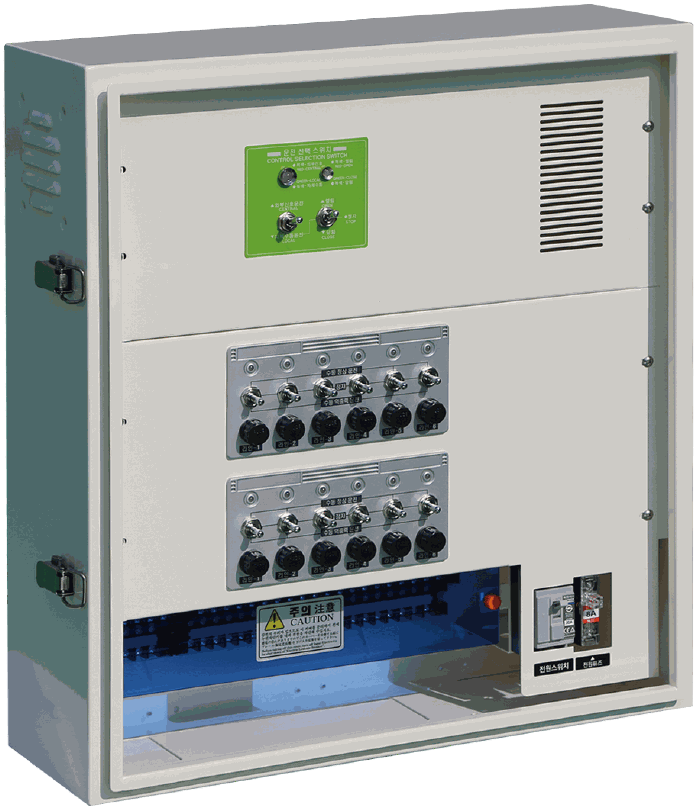
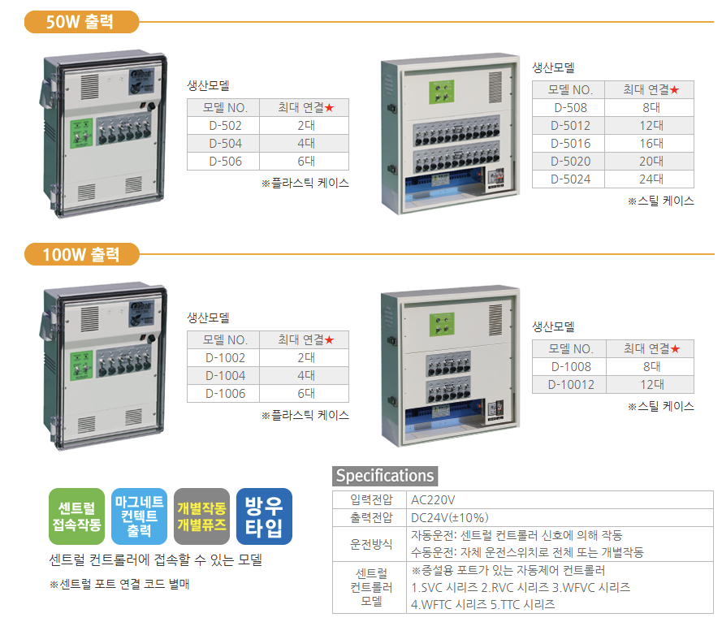

| 모델 NO. | 최대 연결 |
|---|---|
| D-502 | 2대 |
| D-504 | 4대 |
| D-506 | 6대 |
D시리즈
수동운전의 편리함과 센트럴 컨트롤러 연동 확장성을 갖춘 반자동 컨트롤러입니다.
입력 AC220V출력 DC24V운전 개별·전체 수동연동 릴레이 신호50W·100W 출력과 연결 대수에 따라 모델을 선택합니다.
플라스틱 케이스2·4·6대 연결 모델

스틸 케이스8대 이상 연결 모델핵심 기능 카드를 눌러 장점과 확장 방법을 확인하세요.
※ 센트럴 포트 연결 코드는 별매입니다.
제품 사양
- 입력전압
- AC220V
- 출력전압
- DC24V(±10%)
- 연동운전
- 센트럴 컨트롤러의 릴레이 신호에 의해 작동
- 수동운전
- 자체 운전스위치로 전체 또는 개별 작동
처음에는 수동으로, 필요할 때 중앙제어로 확장
지금 자체 스위치로 개별·전체 수동운전
›
증설 개폐기 수량에 맞춰 D시리즈 모델 추가
›
향후 센트럴·원격제어 장치의 릴레이 신호 연동
처음부터 자동 시스템 전체를 구성하지 않아도 됩니다. D시리즈를 사용하면 현장 수동운전을 유지하면서 향후 상위 제어 신호를 받아 운전하는 방식으로 단계적인 확장이 가능합니다.
MODEL LINEUP출력별 생산 모델＋
연결할 전동개폐기의 소비전력과 전체 대수를 확인하여 선택하십시오.
| 모델 NO. | 최대 연결 |
|---|---|
| D-508 | 8대 |
| D-5012 | 12대 |
| D-5016 | 16대 |
| D-5020 | 20대 |
| D-5024 | 24대 |
| 모델 NO. | 최대 연결 |
|---|---|
| D-1002 | 2대 |
| D-1004 | 4대 |
| D-1006 | 6대 |
| 모델 NO. | 최대 연결 |
|---|---|
| D-1008 | 8대 |
| D-10012 | 12대 |
기존 카탈로그 원본표 보기 ⌄

STANDARD PARTS케이스별 기본 제공 부품＋
D시리즈 기본 제공 부품 플라스틱 케이스

설치 고정부품
플라스틱 케이스를 시설에 고정하는 브래킷과 체결부품

예비퓨즈
컨트롤러 출력 회로 보호용

사용설명서
향후 종이 설명서를 제품 QR 코드로 확인하는 디지털 설명서로 대체할 예정입니다.
D시리즈 기본 제공 부품 스틸 케이스

전원코드
스틸 케이스 컨트롤러의 AC 전원 연결용
설치 고정부품
스틸 케이스를 시설에 고정하는 브래킷과 체결부품
예비퓨즈
컨트롤러 출력 회로 보호용
사용설명서
향후 종이 설명서를 제품 QR 코드로 확인하는 디지털 설명서로 대체할 예정입니다.
CENTRAL LINK센트럴 컨트롤러 연동＋
센트럴 컨트롤러열림·닫힘 릴레이 신호 출력
›D시리즈마그네틱 스위치로 신호 수신
›전동개폐기환기창 열림·닫힘 작동
센트럴 컨트롤러가 개폐기를 직접 구동하는 것이 아니라 D시리즈에 릴레이 신호를 전달하고, D시리즈가 전동개폐기의 출력 회로를 제어합니다.